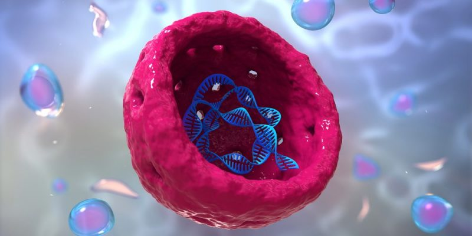
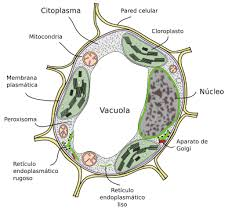

El núcleo de la célula fungi es una estructura clave que contiene el material genético del hongo, organizado en forma de cromosomas. Al igual que en otras células eucariotas, el núcleo está rodeado por una membrana nuclear que lo separa del citoplasma, creando un entorno donde el ADN se puede replicar y transcribir sin interferencias.
Dentro del núcleo, el ADN se encuentra asociado con proteínas, formando una estructura llamada cromatina. Durante la división celular, la cromatina se condensa para formar cromosomas visibles. El núcleo también contiene nucléolos, que son responsables de la síntesis de ribosomas, fundamentales para la producción de proteínas.
El núcleo juega un papel esencial en los procesos celulares, incluyendo la replicación del ADN, la transcripción de ARN y la regulación de la expresión genética. Estas funciones son cruciales para el crecimiento, el desarrollo y la reproducción de los hongos. Durante la reproducción sexual, algunos hongos forman estructuras especializadas en las que se producen esporas, y el núcleo participa en la formación de estas esporas al combinar material genético de dos organismos parentales.

Que es la vacuola?
La vacuola en la célula fungi es una estructura cerrada por una membrana que cumple varias funciones esenciales. Actúa como un espacio de almacenamiento para nutrientes, desechos y productos de reserva, como azúcares y almidones. Además, regula la presión osmótica, manteniendo la turgencia celular, lo cual es crucial para la estructura del hongo. También ayuda en la detoxificación al almacenar productos de desecho y toxinas, y en algunos casos, contiene enzimas que facilitan la digestión intracelular de nutrientes.
